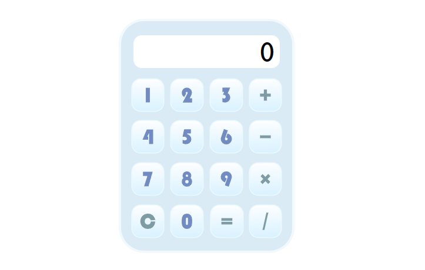
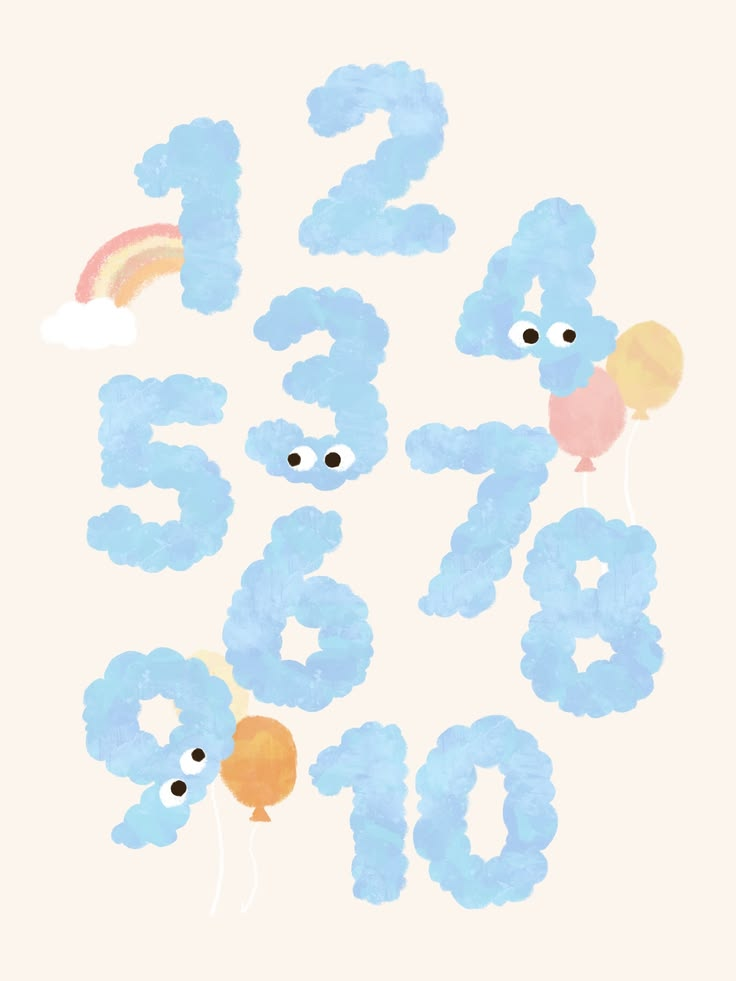
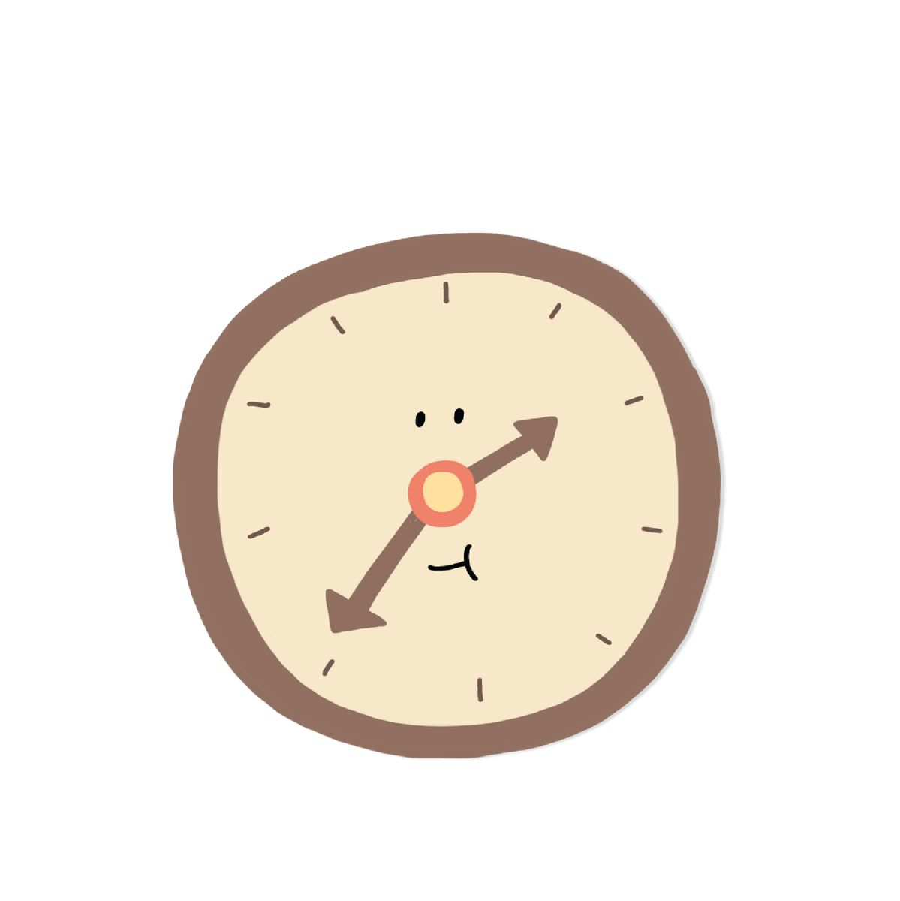

PRACTICE
計算機

內容說明
使用 HTML、CSS 與 JavaScript 製作網頁計算機，支援加、減、乘、除及連續運算，並加入數字位數限制、科學記號轉換與按鍵互動效果，讓操作流程更加直覺，也提升整體使用體驗。
猜拳遊戲
內容說明
使用 HTML、CSS 與 JavaScript 製作猜拳遊戲。玩家選擇出拳後，系統會隨機產生電腦的出拳結果，自動判斷勝負並即時顯示，藉此練習亂數應用、條件判斷及事件處理。
亂數產生

內容說明
使用 HTML、CSS 與 JavaScript 製作亂數產生器，可依照設定範圍與數量隨機產生不重複的數字，並即時顯示產生結果，讓使用者能快速取得符合條件的隨機數值。
1A2B

內容說明
使用 HTML、CSS 與 JavaScript 製作 1A2B 猜數字遊戲，由系統隨機產生一組不重複的數字，玩家輸入答案後會即時判斷數字與位置，並顯示對應的 A、B 結果，增加遊戲的挑戰性與互動性。
PINGU對對樂
內容說明
使用 HTML、CSS 與 JavaScript 製作 PINGU 主題對對樂遊戲，玩家需在限時內翻牌並找出相同圖片，畫面會即時顯示剩餘時間與完成組數，並提供重新開始功能，增添遊戲的趣味性與挑戰性。
TO DO LIST
內容說明
使用 HTML、CSS 與 JavaScript 製作 To-do List 待辦事項工具，使用者可新增、編輯及刪除任務，並透過 LocalStorage 儲存資料，重新開啟網頁後仍能保留待辦內容，提升日常事項管理的便利性。
UI/百貨APP
內容說明
使用 Adobe XD 規劃百貨 APP 的介面與操作流程，整合樓層導覽、品牌查詢、優惠活動及會員資訊等功能，並透過原型互動模擬實際操作體驗，打造清楚且直覺的使用介面。
UI/Podcast APP
內容說明
使用 Figma 規劃 Podcast APP 的介面與操作流程，整合節目分類、內容搜尋、單集播放及收藏功能，並透過互動原型模擬實際操作體驗，打造簡潔、直覺且具一致性的使用介面。
UI/Foodpanda
內容說明
使用 Adobe XD 重新設計 foodpanda APP 的介面與操作流程，整合餐廳瀏覽、餐點選擇、購物車及訂單確認等功能，並透過互動原型模擬點餐流程，打造清楚、流暢且直覺的使用體驗。
UI/Foodpanda
內容說明
使用 Adobe XD 設計保養品網站 UI，並依循 Bootstrap 網格系統規劃版面，完成首頁、商品分類及產品介紹等介面，著重視覺層級與操作動線，呈現清楚且舒適的瀏覽體驗。
個人網站
內容說明
使用 ASP.NET MVC 與 C# 開發個人網站，整合個人介紹、學習歷程、工作經歷及作品展示等內容，並規劃資料庫與後台管理功能，打造兼具展示與管理功能的個人網站。
打卡網站

內容說明
使用 ASP.NET MVC、C# 與 SQL 開發線上打卡系統，提供上下班打卡、出勤紀錄查詢及請假申請等功能，並規劃管理者審核與人員資料管理介面，打造完整且便利的出勤管理流程。